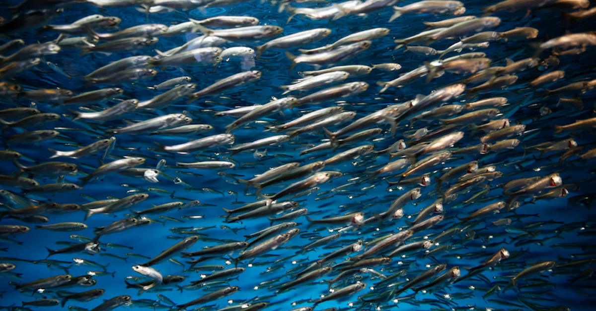

Brief History on Sardines¶
Source: SeaGrant California
(add some text here about importance/history of sardine)
# import required packages
import pandas as pd
import numpy as np
import matplotlib.pyplot as plt
from matplotlib.pyplot import figure
import plotly.graph_objects as go
import plotly.express as px
import plotly.io as pio
import math
pio.renderers.default = 'notebook'
The collapse of the pacific sardine population propelled the formation of The California Cooperative Oceanic Fisheries Investigations (CalCOFI) in 1949 to better understand factors influencing the decline of the sardine population, such as the relative role of fishing effort and environmental variability on the population. The pacific sardine was highly valued as it was the main fish for many fisheries not just in the California Coast, but the entire country. In fact, sardine significant played a role in World War I by being one of the main source of food. Thus, the decline of the sardine population caused a lot of panic due to its value and importance in history.
CALCOFI stated in their research article that they hypothesize temperature to be the leading cause of the decline. Yet, results of their analysis concludes a multitude of different variables- such as a change in migration patterns and predatory behaviors. In addition, the role of overfishing in declining sardine populations relative to environmental variability is still an open question. Thus the question still remains: has the sardine population recovered from the effects of this decline?

# Loading Sardine Larvae Count Dataset
sardine_ts2 = pd.read_csv("data/sardine_larvae.csv")
sardine_ts2['Count'] = sardine_ts2['Count'].div(4).round(0)
We can visualize the sardine population using two different scopes. The first method is to track the amount of sardine larvae recorded each years. As the saying goes, children are our future. Thus, visualizing the larvae population is crucial in showcasing what the future of sardine population may be. The second method is similar- visualize the pounds of adult sardine caught. More sardine caught in a given year may indicate that there was a higher amount of sardine present in the wild.
Sardine Larvae Per Year¶
The chart below visualizes the count of sardine larvae recorded per year.
# clean and process landing data (time series version)
fish_count_ts_df = landing_summary_ts.filter(['Year','SpeciesName'],axis=1)
fish_count_ts_df.drop(fish_count_ts_df.tail(5).index,inplace=True)
# filter dataframe for sardine, groupby year, find counts per year, and rename columns
sardine_ts2 = fish_count_ts_df[fish_count_ts_df['SpeciesName']=='Sardine, Pacific '].groupby('Year').count().reset_index().rename(columns={'SpeciesName':'Count'})
# relabel column
sardine_ts2['Species'] = 'Sardine'
# create new variable that keeps track of "year" -> used to animate the line graph
data_sardine = []
for y in sardine_ts2['Year'].unique():
df = sardine_ts2[sardine_ts2.Year<=y].copy()
df['year_upto'] = y
data_sardine.append(df)
sardine_ts_animated = pd.concat(data_sardine)
# convert Year column into integers
sardine_ts_animated.Year = sardine_ts_animated.Year.astype(int)
# generate line plot
fig_sardine_animated = px.line(
sardine_ts_animated,
x = 'Year',
y = 'Count',
animation_frame = 'year_upto',
range_x = [1949,2022],
hover_name = 'Count',
hover_data =['Count'],
title = 'Sardine Abundance, By Year',
labels = {'Count':'Sardine Abundance','Year':'Year','year_upto':'Year'},
template = 'plotly'
)
# configure axis ranges
fig_sardine_animated.update_xaxes(autorange=False)
fig_sardine_animated.update_yaxes(range=[0,7500])
# configure window layout and display plot
fig_sardine_animated.update_layout(autosize=True)
fig_sardine_animated.show(animate=True,autorange=False)
---------------------------------------------------------------------------
NameError Traceback (most recent call last)
<ipython-input-3-542b819dd9b1> in <module>
1 # clean and process landing data (time series version)
----> 2 fish_count_ts_df = landing_summary_ts.filter(['Year','SpeciesName'],axis=1)
3 fish_count_ts_df.drop(fish_count_ts_df.tail(5).index,inplace=True)
4
5 # filter dataframe for sardine, groupby year, find counts per year, and rename columns
NameError: name 'landing_summary_ts' is not defined
The first thing to notice is that there was barely any sardine larvae recorded up until the mid 1980s. This is related to figure 1 showcasing the abundance of pacific sardine catch prior to the population decline. Since the adults are needs to make fish larvae and there were very few adults, there were low abudances of sardine larvae.

Overall, the population seems to have been suffering up until the 1990s, and then there was a major spike right before the year 2000, and even more spikes at around 2005 and 2010. This could be explained due to better technology over time or the that the spikes in population has something to do with the environmental factors at that time, specifically the events of la nina and el nino as mention in the research article.
Adult Sardine Per Year¶
The chart below visualizes the number of adult sardine, in thousands of pounds, caught per year.
#loading the dataset
landing_sardine = pd.read_csv("data/landing_sardine.csv")
landing_sardine = landing_sardine[['Year', 'CatchLbs']]
# create new variable that keeps track of "year" -> used to animate the line graph
data_sardine = []
for y in landing_sardine['Year'].unique():
df = landing_sardine[landing_sardine.Year<=y].copy()
df['year_upto'] = y
data_sardine.append(df)
sardine_animated = pd.concat(data_sardine)
#sardine_animated
# convert Year column into integers
sardine_animated.Year = sardine_animated.Year.astype(int)
# generate line plot
fig_sardine_animated = px.line(
sardine_animated,
x = 'Year',
y = 'CatchLbs',
animation_frame = 'year_upto',
range_x = [1987,2022],
hover_name = 'CatchLbs',
hover_data = {'year_upto':False,'Year':True,'CatchLbs':False},
title = 'Sardine Catch, By Year',
labels = {'CatchLbs':'Sardine Catch (lbs)','Year':'Year','year_upto':'Year'},
template = 'plotly'
)
# configure axis ranges
fig_sardine_animated.update_xaxes(autorange=False)
fig_sardine_animated.update_yaxes(range=[0,180000000])
# configure window layout and display plot
fig_sardine_animated.update_layout(autosize=True)
fig_sardine_animated.show(animate=True,autorange=False)
The first observation we can make is that there was a rise sardine caught in the mid 1990s, which is around the same time that the recorded sardine lavae was beginning to increase. The original larvae visualization showed a spike in larvae count for certain years, which don’t seem to correlate at the same time as the catch data. However, based on the two visualization we’ve seen before, we can infer that the pacific sardine population is slowly getting better since the mid 1990s. One reason to explain the mismatching spikes for both visualization could be a better understanding of our ocean’s ecosystem and the concious of overfishing. Prior to the sardine population decline, we saw that the peak of how much sardine was being caught reached over 800 million pounds per year. The current catch does not even come close to that number, but perhaps that is ethically intentional as just because there is more fish in the ocean doesn’t mean that catching all of it is the right thing.